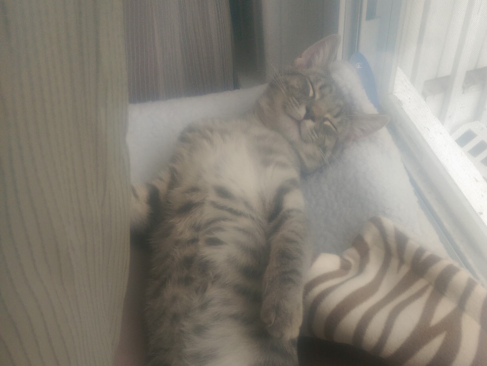
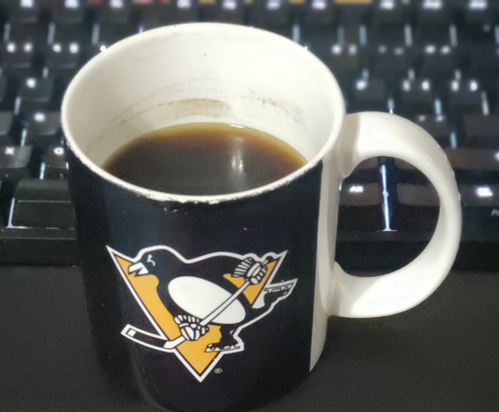

My name is Alex. I am an IT professional in the Pittsburgh area, looking to migrate to software development.
My interests inclue technology, music, cars, cats, and a lot of other things that keep me busy.
In my free time I enjoy playing guitar, and taking care of my cat, Baxter.
Right now I'm learning Javasript, as well as a scripting language called PowerShell for work.
I love taking tasks and finding ways to improve them or automate them. I value efficiency and attention to detail most.
My favorite thing about programming is taking a large complicated problem, and breaking it down into small, solvable steps.
It is a great way to take the mystery away from what might seem like impossible tasks.
I am currently a part time student at Point Park. I am taking Advanced programming and Server Management.
I am a member of the Slack that has been setup for IT students, and can be contacted there. Send a message to Alex Hart or @Alex Hart